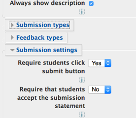
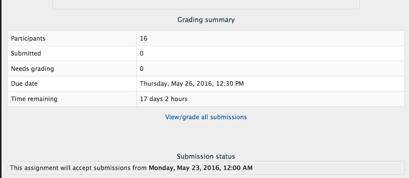
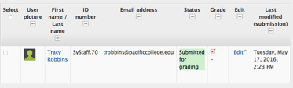
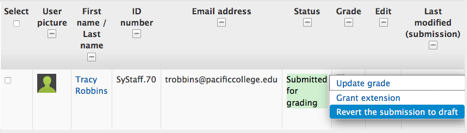
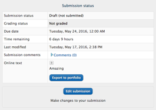
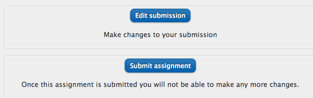

Assignments: Reset an Assignment to Allow Changes/Resubmission
For you to be able to allow a resubmission the Submit button must have been enabled in the Assignment settings before any student has submitted an assignment
.
Most assignments
are set to allow students to submit only one assignment. Once the student has
submitted the item for grading, no further changes can be made by the student.
If a student wants to resubmit an assignment, the instructor will need to
change the status of the assignment from "Submitted for grading" back
to "Draft, not submitted" status.
Here's how...
1. Open the Assignment you want to edit. Click on the "View/grade all submissions" link.
The "View/grade all submissions link is located in the middle of the assignment page.
2. Locate the desired student from the list of submitted assignments

3. Hover cursor over the icon under the "Edit" heading.

Three sub menu items will appear: Update grade, Grant extension and Revert the submission to draft.
4. Select "Revert the submission to draft"
This will change the status of the assignment from "Submitted for Grading" back to a "Draft (not submitted)" mode. The student can make changes to the assignment when it is in draft mode.
5. Advise student to log back into their assignment and make necessary changes.
The student can delete the current submission and resubmit an updated version.

- From the assignment page, the student will click the "Edit
Submission" button.
- If the submission is a file, delete the existing document from the dropbox,
click on the document icon and select "delete."

The student can now upload a new document to replace the former. Once all
changes have been made, the student will click the submit for grading button
again (after which, no further changes can be made to the assignments).